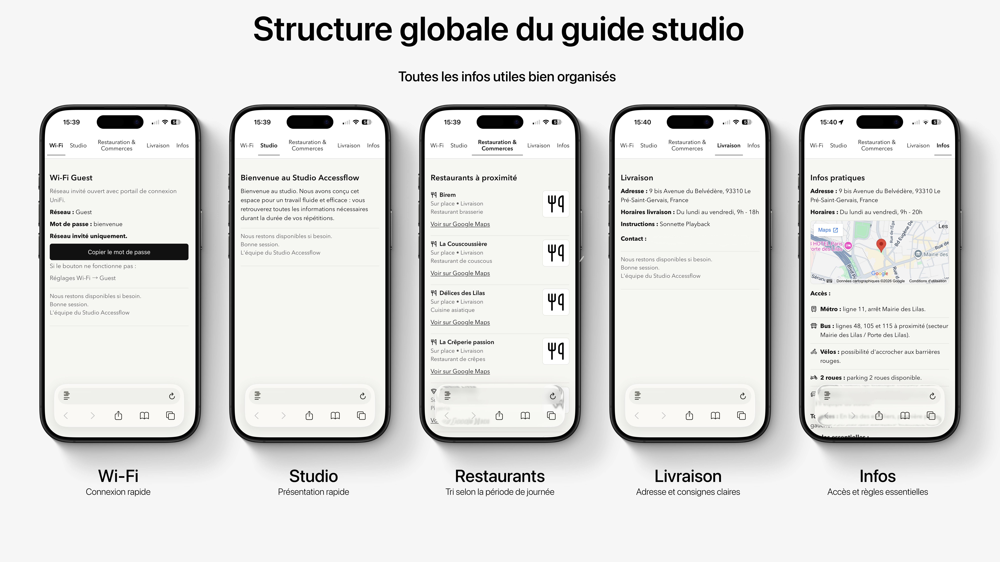
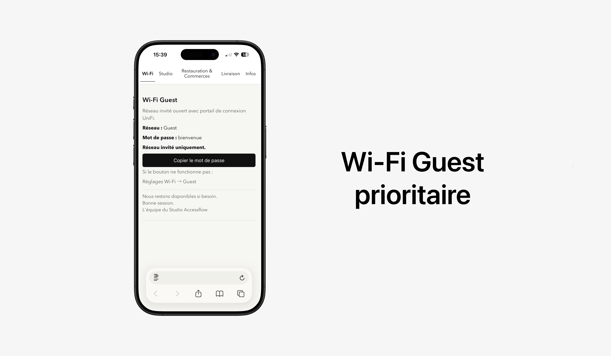
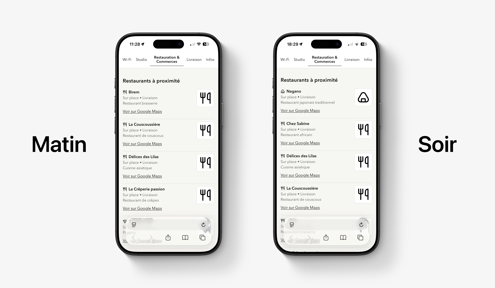

Résumé du projet
Pendant le même stage, j'ai conçu une page studio mobile first destinée aux artistes et invités
présents sur place. L'objectif était de centraliser les informations pratiques les plus demandées
en limitant au maximum les échanges répétitifs avec l'équipe.
Le choix de ce format répondait à un besoin concret : en situation réelle, les utilisateurs cherchent
des réponses immédiates, pas une page vitrine longue à parcourir.
Objectif produit
1 scan → toutes les infos évidentes → zéro question à l'équipe.
La page devait être rapide à charger, ultra lisible et utile immédiatement, sans design décoratif
ni texte long.
- Réduire le temps de recherche d'information sur place
- Rendre l'expérience autonome pour les invités
- Standardiser les réponses aux demandes les plus fréquentes
Contraintes de conception
- Mobile first
- Chargement rapide
- Ton sobre, lisible et fiable
- Chaque bloc doit répondre à une question réelle d'un artiste ou d'un invité
- Aucune fonctionnalité gadget : uniquement des actions utiles sur place

Slot visuel 02 : codage2-02-structure-globale-studio.webp
Wi-Fi Guest en priorité absolue
Le premier écran affiche directement le réseau invité, le mot de passe et une mention explicite
"réseau invité uniquement".
- Nom du réseau : Guest
- Mot de passe : bienvenue
- Bouton d'ouverture des réglages Wi-Fi (mobile)
- Bouton de copie du mot de passe

Slot visuel 03 : codage2-03-wifi-guest.webp
Contenu utile et hiérarchisé
Le contenu est structuré dans l'ordre d'usage réel sur place : Wi-Fi, présentation courte du studio,
restaurants, livraison, infos pratiques, puis message d'équipe.
- Présentation du lieu en 3 lignes
- Adresse de livraison complète et consignes
- Horaires, toilettes, règles, contact interne
- Message court signé "L'équipe du studio"
Restaurants triés selon l'heure
La liste (8 adresses maximum) est triée automatiquement côté client pour proposer les options les
plus pertinentes selon le moment.
- 11h-15h : priorité aux options rapides
- 18h-22h : priorité aux options livraison
- Lien Google Maps direct pour chaque restaurant
Ce tri temporel réduit le temps de décision et évite les allers-retours inutiles avec l'équipe.

Slot visuel 04 : codage2-04-tri-restaurants.webp
Choix techniques
- HTML / CSS / JavaScript vanilla pour une maintenance simple et rapide
- Navigation par sections avec ancre active pour se repérer immédiatement
- Masquage des sections non actives pour un affichage focalisé
- Logique de tri des restaurants basée sur l'heure locale
- Actions utilitaires : copie presse-papiers, ouverture réglages Wi-Fi selon appareil
- Structure modulaire pour mettre à jour facilement horaires, adresses et contacts
Difficultés & ajustements
- Hiérarchiser fortement l'information pour éviter la surcharge sur petit écran
- Conserver une lecture immédiate en dark et light mode
- Garder un équilibre entre simplicité visuelle et actions réellement utiles
Résultats
- Accès immédiat aux infos critiques dès l'arrivée au studio
- Moins d'interruptions de l'équipe sur des questions répétitives
- Parcours invité plus autonome et plus fluide
- Format simple à maintenir et à mettre à jour
Ce que ce projet démontre
- Capacité à transformer une consigne métier en interface opérationnelle
- Priorisation stricte de l'information utile
- Implémentation front-end orientée performance et lisibilité
- Conception pragmatique : moins d'effets, plus d'efficacité